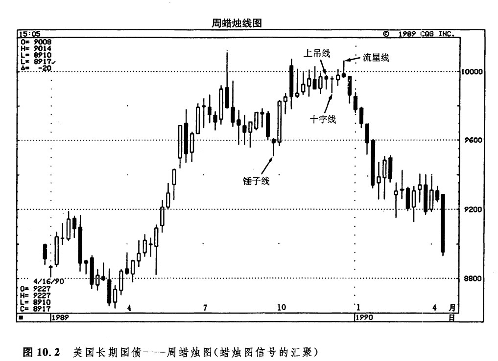
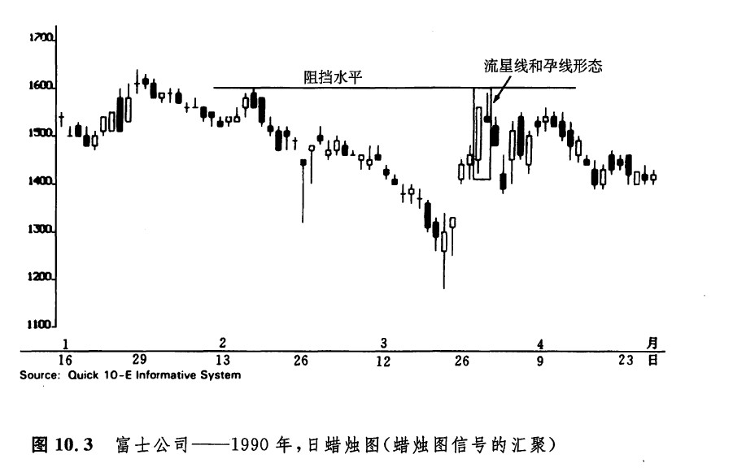
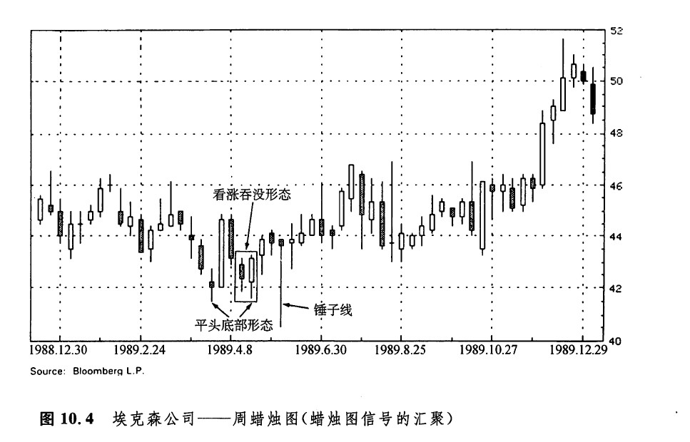
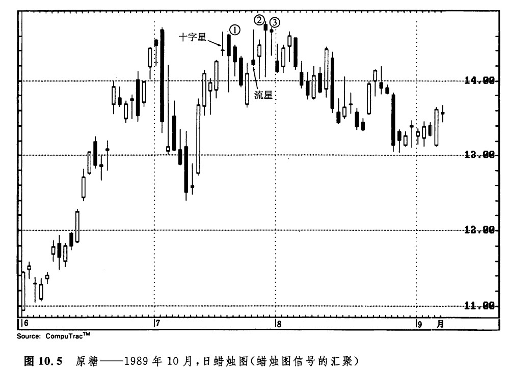
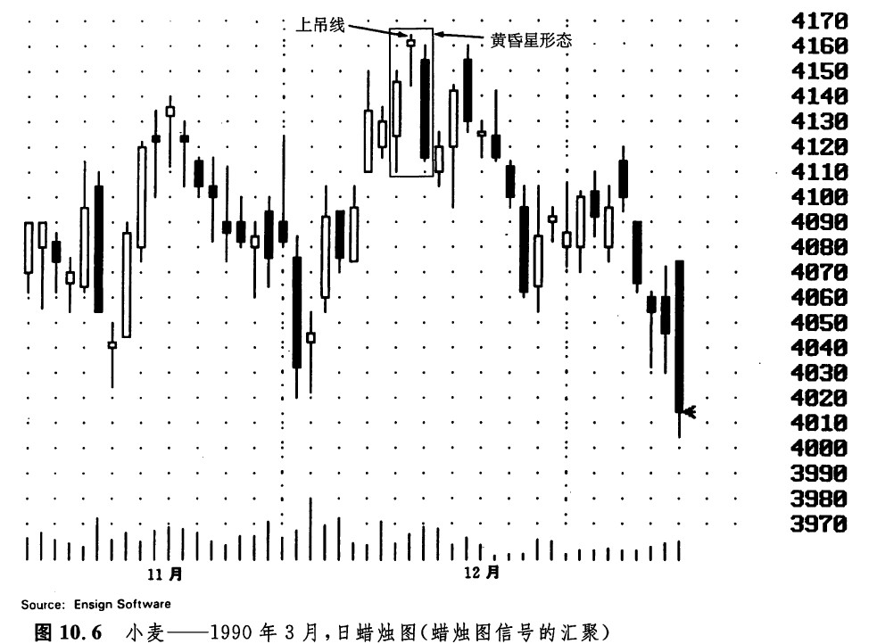
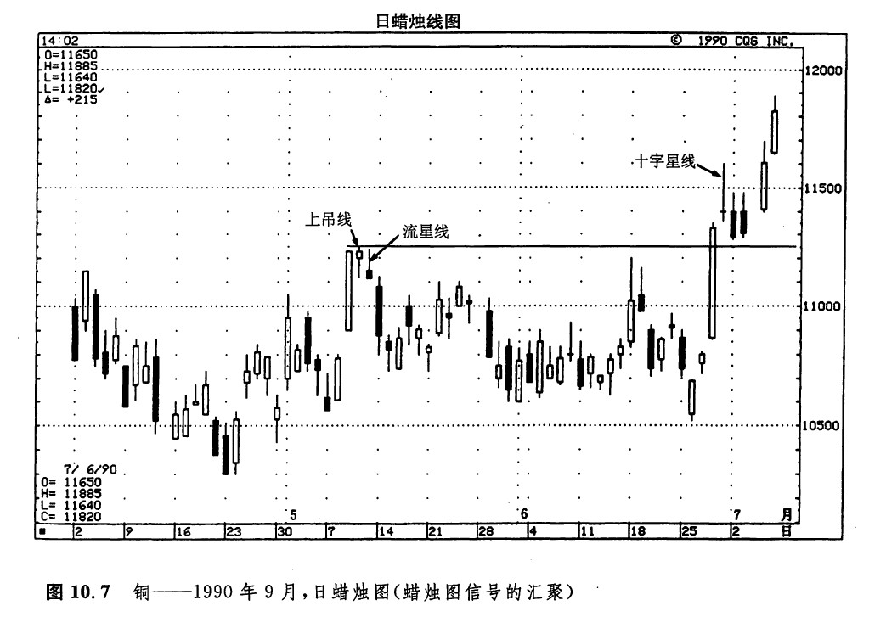
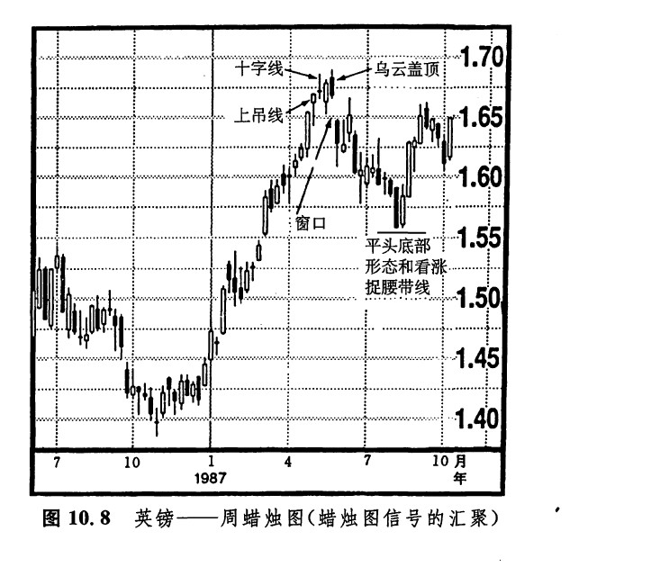

第十章 蜡烛图信号的汇聚
“慎之再慎”
本章将要研究，如果在同一个价格区域内汇聚了一群蜡烛图形态，或者一些特别的蜡烛线，那么，此处将构成一个重要的市场转折点。如图10.1所示，起先有些蜡烛图指标汇聚在一起，预示了价格的回落。后来又有一群蜡烛图信号一起出现，标志着抛售行情的结束。6月初，首先出现的是一根上吊线，紧随其后的是另一个负面技术信号——一根十字线。从此，价格开始下跌，直至另一系列蜡烛图指标揭示出一个重要的市场底部。在后面这群指标中，首先是一根锤子线。次日，是一根坚挺的吞没蜡烛线。几天之后，市场通过一场小规模的下跌行情证实了这个支撑水平的坚固性。在这轮下跌行情中，该锤子线的低点维持得很好。于是，市场对该低点的上述第二次尝试造就了一个平头底部形态。

在图10.2中，9月的锤子线引发了一段上涨行情。11月下旬，在图示的长期国债市场上，构筑了三个蜡烛图顶部反转指标，它们终结了这段上涨行情。这三个指标分别是：
一根上吊线；
一根十字线；
一根流星线，这是最后的一击。

图10.3说明单独一根蜡烛线也可能发出多方面的技术信号。4月初，先有一根长长的白色实体，后面跟着一个小实体，并且这个小实体蜡烛线具有长长的上影线。从后面这根蜡烛线的外形看，这是一根疲软的流星线。其次，这根线的小小的实体（处于前一天的实体的内部）还完成了一个孕线形态。最后，在这根流星线上，上影线的顶端（即，当日的最高点）恰好标志着市场向上试探2月的高点1600点的失败。

如图10.4所示，在几周的时间范围内，该市场先后形成了一个平头底部形态、一个看涨吞没形态，以及一根锤子线。图10.5显示，从7月中到7月底，出现了一系列看跌的蜡烛图指标，其中包括一个十字星形态，其后跟着三根上吊线（在图中我们用数字1、2、3作了标记）。在上吊线1和2之间，还有一根流星线。


如图10.6所示，在一个看跌蜡烛图信号内部，还包含着另一个看跌蜡烛图信号。12月上涨行情的高峰是通过一根上吊线形成的。这根上吊线同时充当了一个黄昏星形态的星线的角色。图10.7显示，从5月9日到11日，在1.12美元的区域，产生了一系列蜡烛图顶部反转信号。5月9日是一根高高的白色蜡烛线，它的后面跟着一个小实体蜡烛线。后面这根蜡烛线又是一根上吊线。另外，这根蜡烛线还与它前面的那根蜡烛线一起完成了一个孕线形态。5月11日，市场再度向上冲击1.12美元的水平。这次冲击还是失败了，并形成了一根流星线。上述三天的最高点差不多都处在同一个水平。通过这群蜡烛线，市场构造了一个短期的顶部。于是，三天之内，出现了四类看跌指标：
一根上吊线；
一个孕线形态；
一个流星形态；
一个平头顶部形态。

市场从上述高位向下回落。1.12美元的水平演变为一个重要阻挡水平。在6月中旬的向上反弹行情中，牛方未能向上突破这一水平，从而证实了它的重要性。1.12美元的价格水平之所以重要，还有另外的原因。当6月28日市场向上突破这一水平以后，它就转化为一个关键的支撑水平。请注意观察6月28日长长的白色蜡烛线之后的那根十字星线。我们知道，十字线出现在长长的白色蜡烛线之后，就构成了顶部反转信号。这就意味着之前的上升趋势即将结束。在这根十字线之后的两天里，市场显露出一副上气不接下气的模样，两根黑色的蜡烛线困在一个水平区域里。市场已经耗尽了上涨的动力——或者说从市场的表面看来，似乎已经耗尽了上升力量。然而，还记得从5月9日到11日形成的那个阻挡区吗？7月2日和3日的两个黑色蜡烛线的最低点，恰恰以这个旧的阻挡水平为支撑水平，维持在该水平之上。熊方使尽挥身解数，企图打破这一支撑水平，但是终究未能如愿。除非这个支撑水平被跌破，否则，就打不断自从6月26日以来的短期牛市的脊梁骨。在本实例中，从5月9日到11日汇聚起来的蜡烛图信号，形成了如此重要的一个市场顶部，甚至在几个月以后，它仍然能够作为新的重要支撑水平而发挥作用。
如图10.8所示，1987年年中，一系列蜡烛图信号宣告了一个市场顶部的到来。具体说来，在一个月的时间里，市场先后形成了一根上吊线、一根十字线，以及一个乌云盖顶形态。当这个乌云盖顶形态出现后，就发生了一轮抛售行情，并且在其发展进程中，形成了一个窗口。在市场形成另一轮下跌行情之前，曾有短暂的向上反弹，但该窗口起到了阻挡作用。这段抛售行情最后以一个平头底部形态和一根看涨捉腰带线收场（虽然这根白色蜡烛线有一点下影线，但其下影线微不足道，足以将它看成一个看涨捉腰带形态）。


下一篇：第十一章 蜡烛图与趋势线
上一篇：多技术方法共同参照原则的实例
copyright @ 2018 制作：汉钛电线，Hingtak Wire & Cable LLC